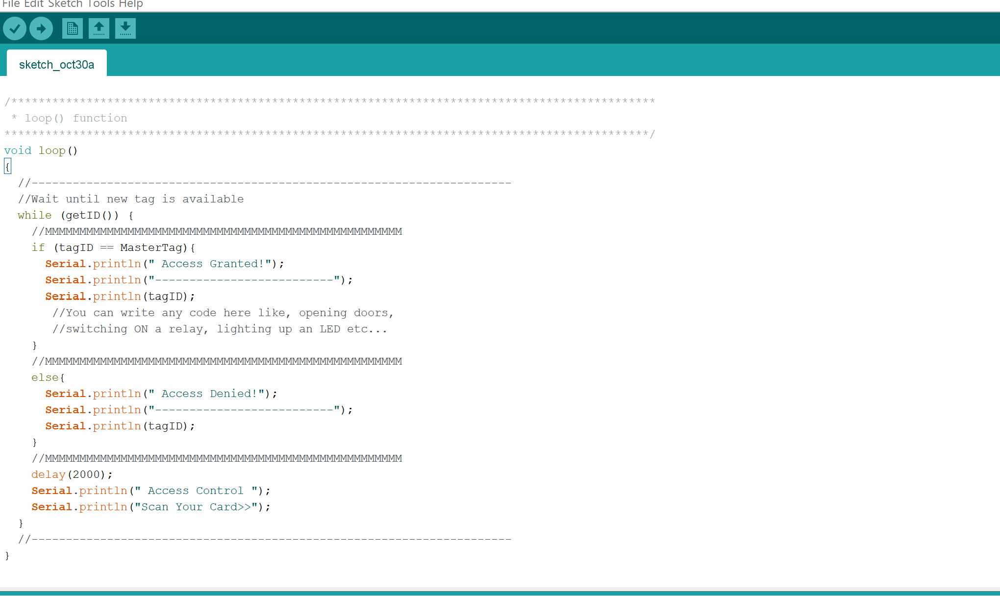

week 1 blog
26/10/2023
Project development
This week, our team discussed and exchanged ideas for the project. Initially, we were going to make a tracking token. But after further discussion,
we decided that it was troublesome to bring a token, and the there is possibility of losing it. Instead, we went ahead with the idea of using an RFID
tag to track attendance. The RFID tag would be attached to their clothing. This extinguishes the chances of it being lost. RFID tags are also small and flat,
which makes it very convenient and portable.
OAL Reflection
This week, we did a design thinking course, of which I had already completed previously in my cloud computing module. This course was helpful in helping us think in the perspective
of the user, and helping us to brainstorm more creative ideas based upon that.
week 2 blog
27/10/2023

Project Development
This week, we got hold of some of the hardware. Namely, the RDIF chip, RDIF scanner, the arduino and some wires to connect everything. We did some research on arduino and attempted
to write code to scan the RDIF chip in the form of a card and keychain, but we were unsuccessful. So, I decided to take the hardware home and attempt again
at home. I learnt how to connect the arduino, as well as how to code the arduino so that it connects successfully.
OAL Reflection
This week, we learn more about scrum and how to apply it to our team. With these videos, our team was able to assign and identify roles
within the team. I learnt more about how to apply the scrum framework to our project. Also, I learnt about the difference between the scrum framework and
agile methology.
week 3 blog
1/11/2023
Project Development
This week, we sucessfully coded the arduino. For now, we are still hard coding the mastertag,
as we are still in progress with the database. I also set up a repository for our mobile app, and also created a figma
project to plan out our app wireframe. I have also successfully connected the arduino to python. Now, the plan is to connect
python to our app in android studios via bluetooth connection, to transfer over the UID of the card scanned. We decided to use a figma version
of the app to start off with, and then transition over to a real android application after the hackathon. We are planning to make a 3D
gantry in blender, and then 3D print out the gantry as a prototype.
OAL Reflection
This week, we learned more about prototypes and its purpose. I also learned how to properly prototype an app on figma. This will
be very helpful for our hackathon, as we are planning to use a figma prototype to showcase our app.
week 4 blog
1/11/2023

Project Development
This week, we successfully conected the bluetooth module to the arduino and RDIF scanner. The bluetooth module
had a blinking light, to show that it was connected and ready to pair. At first, we had trouble with the wiring, as both the RDIF scanner and
bluetooth module required the 3.3v, and the arduino only had one 3.3v. To counter this, we decided to use a breadboard. After successfully connecting all
the wires, it was time to adjust our code. We still have trouble connecting the bluetooth module to our phones. It successfully pairs, but fails to connect
properly. However, we still made a lot of progress this week. We also found that the bluetooth module could only successfully pair with android devices. This
could be due to the fact that it still lacks the ability to connect, but not to pair.
OAL Reflection
This week, we learned about software patterns and architecture. We learned more about how to create software architecture diagrams, as well as how they are useful
and important. Software architecture is the fundamental organization and structure of a software system. It defines the system's components or modules, their relationships,
and how they interact to achieve the system's goals and requirements